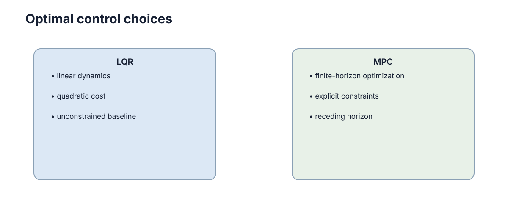

Model Predictive Control
MPC（Model Predictive Control）的核心是：先用模型预测未来若干步，求出一段满足约束且代价最小的控制序列，只执行第一步，然后重新测量、再次优化。 它把"约束"从奖励里的软惩罚升级为一等公民，这是它与 LQR、PID 最本质的分界：LQR 让你的动作"不想太猛"，MPC 让你的动作"绝对不许越界"。

MPC 的有限时域预测
比例控制或 LQR 都只根据当前状态立即计算控制量，是"短视"的：它们看不到"现在猛打方向会导致两秒后越界"。MPC 则把未来 \(N\) 步一起考虑，最小化整段预测轨迹的累计代价
其中 \(N\) 是预测时域（步数），\(\ell\) 是每步代价（通常为二次型），\(\ell_f\) 是加在末端状态上的终端代价。关键差异在于：如果现在急转会带来后续约束违反或高代价，优化器会提前选择更缓和的动作，而不是等越界后再补救。
为什么用"有限"时域而不是像 LQR 那样无穷？因为无穷时域下带约束的优化几乎是不可解的在线问题，而截断到 \(N\) 步后，问题变成有限维、可实时求解的凸优化。代价是视野被截断，需要终端项来补上"被砍掉的那一段"的近似，详见后文稳定性小节。
这使 MPC 特别适合车辆、无人机和过程控制等"动作后果延迟显现"的系统。设控制周期 \(\Delta t\) 与预测步数 \(N\)，则预测覆盖的总时长为 \(T_p=N\cdot\Delta t\)：例如 \(\Delta t=50\) ms、\(N=20\)，控制器每一步都向前看整整 1 秒。
| 控制器 | 视野 | 是否处理未来约束 | 是否随预测调整 | 在线求解 |
|---|---|---|---|---|
| PID | 只看当前误差 | 否 | 否 | 无 |
| LQR | 无穷时域（闭式增益） | 否 | 否（增益固定） | 无 |
| MPC | 有限 \(N\) 步显式轨迹 | 是 | 每步重新求解 | 每步 QP |
预测过程来自系统模型
MPC 的"预测"不是猜，而是用模型逐步递推。对离散线性模型
给定当前状态 \(x_0\) 和候选控制序列 \(u_0,\ldots,u_{N-1}\)，可以逐步得到
把整段状态堆成列向量 \(X=[x_1;x_2;\dots;x_N]\in\mathbb{R}^{nN}\)、整段输入堆成 \(U=[u_0;u_1;\dots;u_{N-1}]\in\mathbb{R}^{mN}\)，则预测可写成一次线性映射
其中
注意 \(\Gamma\) 是分块下三角：\(u_j\) 只影响 \(x_{j+1}\) 及其之后的状态，这个"因果"结构后面会让 QP 的 \(H\) 保持稀疏、加快求解。因此一段控制序列的好坏可以通过整段预测轨迹来评价，而不是只看下一步。
维度感很重要：\(n=4\)（位置、速度、航向、航向角速度）、\(m=2\)（油门、转向）、\(N=20\) 时，\(U\) 是 40 维、\(X\) 是 80 维，\(\Gamma\) 是 \(80\times 40\) 的稠密块。\(N\) 每翻倍，\(U\) 与 \(X\) 的维数也翻倍，而 \(\Gamma\) 的元素数按四倍增长，这解释了为什么预测时域不能随便拉长。
| \(N\) | \(U\) 维数 | \(X\) 维数 | 预测时长（\(\Delta t=50\) ms） | 直观影响 |
|---|---|---|---|---|
| 10 | 20 | 40 | 0.5 s | 反应快、前瞻不足 |
| 20 | 40 | 80 | 1.0 s | 常用折中 |
| 50 | 100 | 200 | 2.5 s | 前瞻足、求解变慢 |
| 100 | 200 | 400 | 5.0 s | 求解易吃满预算 |
| 量 | 维度 | 含义 |
|---|---|---|
| \(x_0\) | \(n\times 1\) | 当前测量状态 |
| \(U\) | \(mN\times 1\) | 优化变量（整段输入） |
| \(X\) | \(nN\times 1\) | 预测状态轨迹 |
| \(\Phi\) | \(nN\times n\) | 零输入自由响应映射 |
| \(\Gamma\) | \(nN\times mN\) | 输入到状态的传递映射 |
约束是 MPC 与普通最优反馈的重要区别
典型 MPC 问题写成
并满足
\(\mathcal{X}\) 与 \(\mathcal{U}\) 是允许的状态集与输入集，通常就是逐个分量的区间（box 约束）：\(x_{\min}\le x_k\le x_{\max}\)、\(u_{\min}\le u_k\le u_{\max}\)。速度上限、转角限制、加速度约束、道路边界都可以直接放进这两个集合，且是逐时刻约束，不只是末端约束。相比"违反后再在奖励里罚"的软做法，这种表达更明确：优化器要么给出满足约束的解，要么报告问题不可行。
约束之所以能同时处理，是因为它们全部归结为对同一个变量 \(U\) 的线性不等式：输入约束本来就在 \(U\) 上，状态约束经预测映射 \(X=\Phi x_0+\Gamma U\) 也变成 \(U\) 上的约束。这种"把所有要求统一到一个变量上"的能力，正是 MPC 相对 LQR 的核心增量。LQR 想表达同样的边界，只能靠事后饱和，而饱和会破坏最优性、甚至引发极限环。
一个量化例子：若最大速度 \(x_{\max,2}=2\) m/s、单步周期 \(\Delta t=50\) ms，则每步允许的速度变化只有 \(0.1\) m/s 量级，优化器会把这个"物理可达性"直接当成线性不等式，而不是在仿真里事后发现超速。
| 约束类型 | 数学形式 | 落点 | 常用处理 |
|---|---|---|---|
| 输入幅值 | \(u_{\min}\le u_k\le u_{\max}\) | \(U\) 直接约束 | 硬约束 |
| 输入变化率 | \(\Delta u_{\min}\le u_k-u_{k-1}\le\Delta u_{\max}\) | \(U\) 的差分约束 | 硬约束，抑制抖动 |
| 状态范围 | \(x_{\min}\le x_k\le x_{\max}\) | 经 \(X=\Phi x_0+\Gamma U\) 转成 \(U\) 约束 | 多为软约束 |
| 终端状态 | \(x_N\le x_{\max}\) | 末行约束 | 常配终端集 |
滚动时域让预测不断被真实测量纠正
MPC 并不会一次执行整段最优控制，它只执行第一个输入 \(u_0\)，下一周期重新测量真实状态，再求一次新的优化问题。这就是 receding horizon（滚动时域）的核心。
这个机制带来一个关键好处：闭环鲁棒性。如果模型不准，"开环执行整段最优序列"会越走越偏；而每拍重新用真实测量 \(x_0\) 重新优化，相当于把预测误差在每个周期清零一次。因此 MPC 天然容忍一定程度的模型误差，代价是每周期都要重新求解。
从数学上看，滚动时域把"开环最优控制问题"变成了一个"闭环反馈律"：控制律 \(u=\kappa(x_0)\) 由优化问题的解的第一段隐式定义，虽然 \(\kappa\) 没有闭式表达，但每一点都可求值。这也意味着 MPC 的性能依赖测量质量——如果状态估计有偏，错误会直接被当成真值塞进优化，反而不如对噪声不敏感的低增益 PID。
| 执行方式 | 模型误差累积 | 约束保证 | 计算负担 |
|---|---|---|---|
| 开环整段执行 | 随步数线性累积 | 仅首步可靠 | 一次求解 |
| 滚动时域（只执行首步） | 每步清零 | 每步都重新满足 | 每步求解 |
预测时域的选择
时域太短，看不到远期后果，控制器表现接近短视反馈；时域过长，优化变量 \(U\) 的维数 \(mN\) 增大、求解变慢，而且模型误差会在长预测上持续累积，让"看得远"反而变成"看错得远"。
常用的经验法是让预测覆盖系统的主导时间常数：令 \(T_p=N\Delta t\) 覆盖最慢模态时间常数的 2 到 3 倍，保证从当前状态到目标的关键过渡都在视野内。车辆控制常用 1 到 3 秒内的有限时域，并以几十毫秒到几百毫秒的周期重复求解，而不是预测几十秒以后的所有细节。
还有一个容易忽略的细节：控制时域（允许变化的输入个数 \(N_c\)）可以小于预测时域 \(N\)。常见做法是令 \(N_c<N\)、末尾若干步保持最后一个输入不变，这样既保留了长视野，又把优化变量从 \(mN\) 降到 \(mN_c\)，大幅减轻计算。
| 时域选择 | 表现 | 风险 | 建议 |
|---|---|---|---|
| \(T_p\) 过短 | 看不到制动距离 | 临近障碍才反应 | 至少覆盖制动所需时间 |
| \(T_p\) 合适 | 兼顾性能与算力 | — | 主导时间常数的 2–3 倍 |
| \(T_p\) 过长 | 预测偏乐观 | 模型误差累积、维数爆炸 | 加终端代价替代长时域 |
| \(N_c\ll N\) | 变量少、求解快 | 末端动作粗糙 | 折中取 \(N_c\approx N/2\) |
MPC 的实时计算约束
MPC 最大的工程约束是时间预算。控制周期为 50 ms，就意味着优化最好稳定地在这个预算内完成；偶尔求出更优但经常超时的控制器，实际效果可能不如一个稍保守但确定能按时运行的方案。
计算量主要随优化变量维数 \(mN\) 增长，二次型 MPC 每步解一个 \(mN\) 维的 QP。例如 \(m=2,\ N=20\) 时 \(U\) 是 40 维、约束上百条，用稀疏内点法或 active-set 法通常能在几毫秒内解完，远小于 50 ms 预算；但若把 \(N\) 提到 100，\(U\) 变成 200 维，求解时间可能随维数立方上升，直接吃满预算。工程上用 warm start（用上一步的解作为初值）、稀疏结构化 QP、以及缩减控制时域来把时间压回预算内。
入门阶段掌握线性 MPC 就足够。非线性 MPC、鲁棒 MPC 等只是同一框架在更复杂模型和不确定性下的扩展，不需要为了理解主线先全部学习。非线性的代价是每步要迭代求解（SQP 或实时迭代），把原本的"一次 QP"变成"多次 QP"，对算力的要求往往高出一个数量级。
| 因素 | 影响 | 缓解 |
|---|---|---|
| \(N\) 增大 | 变量维数、求解时间上升 | warm start、稀疏 QP |
| 控制频率升高 | 单周期预算缩短 | 降 \(N\) 或用显式 MPC |
| 约束数量增多 | QP 行数增加 | 合并同类、只保留活跃约束 |
| 非线性模型 | 需 SQP/内点迭代 | 局部线性化、实时迭代 |
不可行问题的处理
当初始状态、预测模型与硬约束彼此冲突时（例如当前速度已经超过上限、或离障碍太近无法在时域内刹停），优化器可能找不到任何满足全部约束的解，此时它不会输出"次优解"，而是直接失败。
工程 MPC 通常把部分约束（尤其是状态约束）设为软约束：引入松弛变量 \(\varepsilon\ge 0\) 和惩罚权重 \(\rho\)，把 \(x_k\le x_{\max}\) 改成 \(x_k\le x_{\max}+\varepsilon\)，并在代价里加 \(\rho\|\varepsilon\|\)。这样当冲突轻微时，控制器愿意付出一点违反代价继续工作；当 \(\rho\) 足够大时，只要有可能，优化器仍会优先满足硬约束。\(\rho\) 的取值要落在"大到足以压制违反、小到不引起数值病态"之间，工程上常从每步代价量级的 \(10^3\) 到 \(10^6\) 倍起步再调。
除软约束外，还需要准备好回退策略（上一时刻控制、安全停车或安全控制器），才能区分"优化失败"与"系统完全无法安全运行"。通常还要对约束分级：碰撞、速度上限这类安全约束优先级最高，舒适性、轨迹贴合这类性能约束可以先软。
软约束的设计要点：
- 只软化状态约束，输入幅值等物理硬约束保持刚性；
- 松弛变量对每一时刻、每一分量单独设置，避免"一处违反、处处放宽"；
- 惩罚权重按代价量级的 \(10^{3}\) 倍以上起步，确保违反只在必要时发生；
- 一旦松弛量超过阈值，立即上报上层安全监控，而不是继续输出控制。
| 现象 | 原因 | 风险 | 处理 |
|---|---|---|---|
| QP 无解 | 硬约束相互冲突 | 控制器无输出 | 状态约束软化 + 回退 |
| 违反很频繁 | \(\rho\) 太小 | 约束形同虚设 | 提高 \(\rho\) 或查模型 |
| 松弛量巨大 | 初始状态已不可行 | 输出危险动作 | 触发安全层接管 |
| 求解超时 | 算力不足 | 丢拍、抖动 | 限迭代次数 + warm start |
二次型 MPC 与 QP 形式
把预测模型代入二次代价，整个 MPC 问题就化成一个标准二次规划（QP）。这是线性 MPC 能在毫秒级求解的根本原因。取每步代价 \(\ell(x,u)=x^{\top}Qx+u^{\top}Ru\)、终端代价 \(\ell_f(x)=x^{\top}Q_f x\)，并令
把 \(X=\Phi x_0+\Gamma U\) 代入代价，\(x_0\) 视为常量：
其中
\(H\) 只依赖模型与权重、与 \(x_0\) 无关，可以离线预先算好；\(f\) 每步随测量状态 \(x_0\) 更新，是唯一需要在线重算的系数。约束部分，输入盒约束直接写成 \(U\) 的上下界；状态约束 \(x_{\min}\le X\le x_{\max}\) 经预测映射转为 \(\Gamma\) 上的不等式
于是整个问题写成标准型
这里的优化变量就是整段输入轨迹 \(U\in\mathbb{R}^{mN}\)，维数是 MPC 计算量的直接来源。求解得到的 \(U^{\star}\) 只取其第一段 \(u_0^{\star}\) 施加到系统，其余丢弃、下一步重算。
从结构上看，\(H\) 正定（因 \(\bar R\) 正定）保证 QP 有唯一解，\(\Gamma\) 的块下三角结构让 \(H\) 呈现带状稀疏，专用求解器可以利用这一点把每条约束的处理成本从 \(O(N^2)\) 降到接近 \(O(N)\)。这也是同样规模的 QP，通用求解器与专用 MPC 求解器速度可能差一个数量级的原因。
| 对象 | 表达式 | 维度 | 是否每步变化 |
|---|---|---|---|
| \(U\) | \([u_0;\dots;u_{N-1}]\) | \(mN\) | 优化变量 |
| \(H\) | \(2(\Gamma^{\top}\bar Q\Gamma+\bar R)\) | \(mN\times mN\) | 否（离线） |
| \(f\) | \(2\Gamma^{\top}\bar Q\Phi x_0\) | \(mN\) | 是（随 \(x_0\)） |
| \(A_c,b_c\) | 约束矩阵与右端 | 约束数 \(\times mN\) | 右端随 \(x_0\) |
稳定性与终端代价
一个反直觉的事实：有限时域 + 无终端约束，并不保证闭环稳定。因为优化器只对 \(N\) 步负责，聪明的解可能是"这几步代价很低，但把状态推到很糟的地方交给未来"——Lyapunov 意义下闭环可能振荡甚至发散。
标准补救是加终端代价：令 \(\ell_f(x)=x^{\top}P x\)，其中 \(P\) 取无穷时域 LQR 的 Riccati 解（即离散 DARE 的解）。这样终端代价恰好等于"从末端状态出发、无约束条件下未来的累积代价"，于是有限时域代价成为真实无穷代价的上界，最小化它就等价于最小化一个真实的 Lyapunov 函数。更强的做法是再加终端集 \(\mathcal{X}_f\)（一个在最优反馈下正不变的集合），约束 \(x_N\in\mathcal{X}_f\)，从理论上保证递归可行性。
递归可行性还有一个附带要求：优化问题在每步都要有解。若上一步的解在本步被证明仍可行，迭代就不会中途失效；终端集与终端代价正是用来提供这个"可行性自保持"性质的工具。缺少它们时，即使当前步有解，下一步也可能突然不可行。
| 方案 | 稳定性 | 保证强度 | 额外代价 |
|---|---|---|---|
| 无终端代价 | 不保证 | 无 | 无 |
| 终端代价 \(x^{\top}Px\) | 通常可证 | 中等 | 需解一次 DARE |
| 终端代价 + 终端集 | 可证 | 强 | 增加末行约束，可能更易不可行 |
| 足够长时域 | 近似稳定 | 依赖 \(N\) | 计算量随 \(N\) 上升 |
工程上，终端代价几乎总是要加的，因为它既提升稳定性、又能让较短的 \(N\) 达到较长时域的效果；终端集则可以视算力与保守程度取舍。
何时该用 MPC、何时不该
MPC 不是"更高级所以更好"，而是一个有明确适用边界的工具。判断标准可归纳为四条：约束是否强硬且必须满足、模型是否足够准、算力是否够、控制频率是否够低。四条都满足时 MPC 优势显著；任一条严重不满足时，PID 或 LQR 往往更划算。
一个实用的判断流程：先问"系统是否有必须满足的不等式约束"。若没有，LQR 或 PID 足以达到近似最优，且实现与调试都更简单；若有硬约束但控制频率极高（1 kHz 以上）或处理器只有微控制器级别，则应考虑显式 MPC（离线预计算可行解表）或退回带抗饱和的 LQR；只有当约束强、频率低、算力足、模型准同时成立时，在线 MPC 才是性价比最高的选择。
| 条件 | 倾向 MPC | 倾向 PID / LQR |
|---|---|---|
| 约束 | 有速度/转角/碰撞等硬约束 | 只需避免饱和，软处理即可 |
| 模型 | 模型准、可离线辨识 | 模型难建或不稳定 |
| 算力 | 有足够 CPU/GPU 预算 | 微控制器、算力紧张 |
| 控制频率 | 低频（几十毫秒以上）且任务需前瞻 | 高频（1 kHz 以上）或单回路 |
| 系统规模 | MIMO、强耦合 | 单输入单输出 |
| 开发成本 | 可接受预测器与 QP 调参 | 希望尽快上线 |
若只想快速对号入座，可用下面这张最小判断表：
| 你的情况 | 选择 | 理由 |
|---|---|---|
| 单回路、无约束、模型未知 | PID | 无需模型即可调 |
| 多状态、有线性模型、无硬约束 | LQR | 可离线解出最优增益 |
| 有硬约束、算力足、频率低 | MPC | 约束需显式表达 |
| 高频（1 kHz 以上） | PID / LQR | MPC 易丢拍 |
一句话总结：约束强、模型准、算力够、频率低，选 MPC；否则先用 PID 或 LQR，把问题收敛到需要多步前瞻与硬约束时再升级。
下一步：约束的处理方式与 安全约束 紧密相关；路径规划给出的参考轨迹正是 MPC 的跟踪目标，见 路径与运动规划；如果你还没读 LQR，请先回到 最优控制与 LQR；不确定该用哪种控制器时，对比 PID 控制 与 MPC 的取舍。